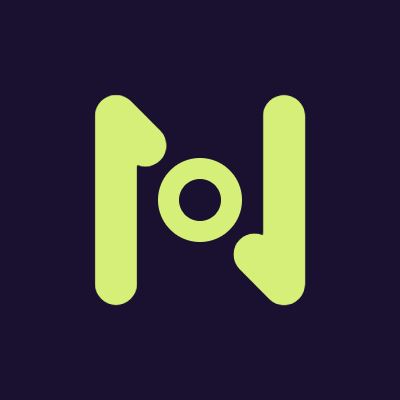
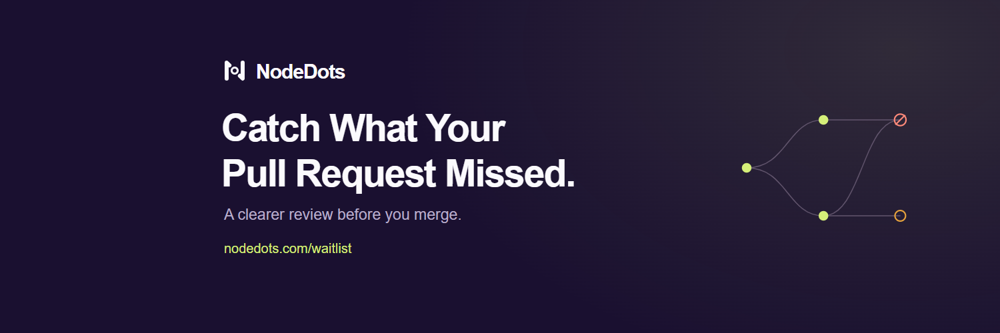
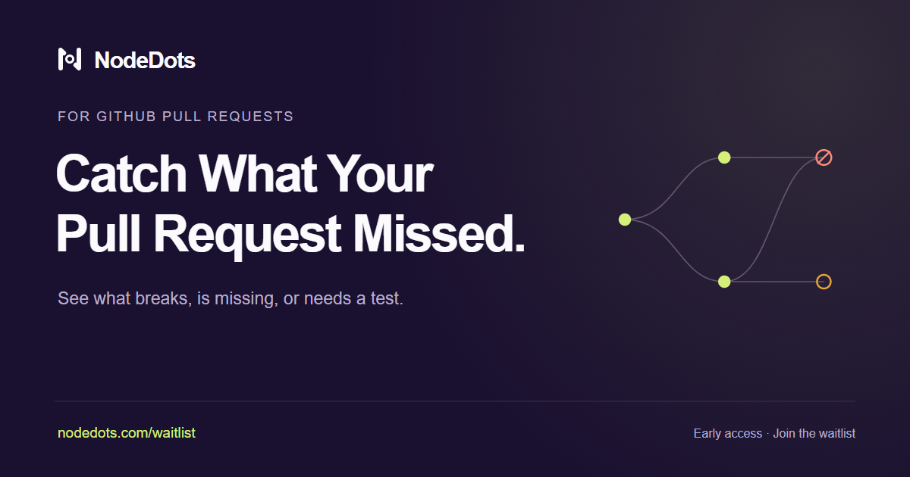
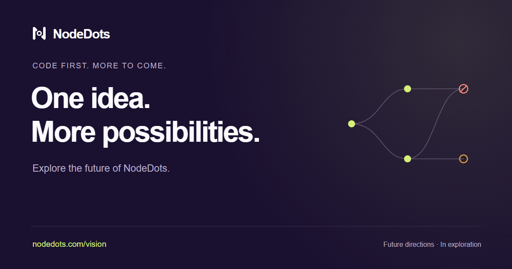

NODEDOTS · BRAND KIT
A Clearer Review Before You Merge.
Editable SVG originals and ready-to-upload PNGs using the established mark, dark purple, and lemon green.
Download the complete kitX Profile




Bio
Catch what your pull request missed. Building GitHub PR reviews that flag broken assumptions, missing work, and tests to check. Early access ↓
Website field: nodedots.com/waitlist
Pinned Post
Your pull request can pass and still forget something.
We're building NodeDots Code to catch broken assumptions, missing work, and untested changes across your repo before you merge.
Starting with GitHub pull requests. Join the waitlist:
https://nodedots.com/waitlist
Website Sharing Cards




Logo & Icons
Dark logo SVG · Light logo SVG · Lemon mark SVG · App icon PNG · Apple touch icon PNG · Favicon ICO


The complete kit includes all variants, usage notes, alt text, profile setup, the pinned post and five starter posts. Assets and copy are prepared; the X account has not been changed.
Back to NodeDots